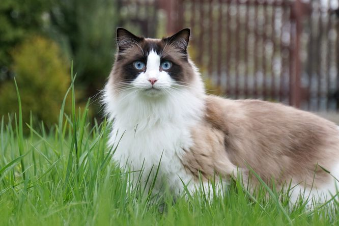

The Ragdoll cat is a large, affectionate breed with striking blue eyes and a silky coat. Known for their relaxed nature, they make ideal, low-maintenance companions, forming strong bonds with their owners.
The Ragdoll cat, a captivating breed originating in the 1960s, has gained popularity for its distinctive appearance and gentle disposition. These felines are known for their striking blue eyes and semi-longhaired, color-pointed coats, which contribute to their regal and elegant appearance.
The history of the Ragdoll breed traces back to California, where Ann Baker began selectively breeding cats with specific traits. The foundation cat, Josephine, a white Persian-Angora mix, mated with a Birman-like male, produced kittens with unique characteristics. The breed's name, "Ragdoll," reflects the cats' tendency to go limp and relaxed when picked up, resembling a child's ragdoll toy.
One of the most notable features of the Ragdoll is its large size. Adult males typically weigh between 15 to 20 pounds, while females generally range from 10 to 15 pounds. Despite their substantial size, Ragdolls are known for their gentle and placid nature, making them suitable for families and individuals alike.
Ragdolls are renowned for their color-pointed coats, a pattern where the body is lighter than the extremities such as the face, ears, paws, and tail. The breed standard recognizes several color variations, including seal, blue, chocolate, lilac, and more. Their semi-longhaired fur is silky and soft, requiring regular but minimal grooming to prevent matting.
Beyond their physical attributes, Ragdolls are celebrated for their affectionate and social personalities. They thrive on human interaction and often form strong bonds with their owners. Ragdolls are known to follow their human companions around the house, seeking attention and companionship. Their gentle demeanor makes them well-suited for indoor living, and they generally get along well with other pets.
While Ragdolls are not overly vocal, they are effective communicators. They may use soft, melodic voices to express their needs, and some individuals become quite talkative, engaging in "conversations" with their owners. Their communicative style adds to the charm and personality of the breed.
Ragdolls are also recognized for their adaptability and intelligence. They often enjoy interactive play and can be trained to perform tricks or use a scratching post. Puzzle toys and games that stimulate their minds contribute to their overall well-being.
In terms of health, Ragdolls are generally robust and have an average lifespan of 12 to 17 years. However, like all breeds, they may be prone to certain genetic conditions, such as hypertrophic cardiomyopathy (HCM). Regular veterinary check-ups and a healthy diet are essential to ensuring their well-being.
In conclusion, the Ragdoll cat is a magnificent and beloved breed with a captivating history and distinctive traits. From their stunning appearance to their gentle temperament, Ragdolls have earned their place as cherished companions in countless households around the world. Whether curling up for a nap or engaging in playful antics, Ragdolls continue to enchant cat enthusiasts and bring joy to those fortunate enough to share their lives with these remarkable felines.